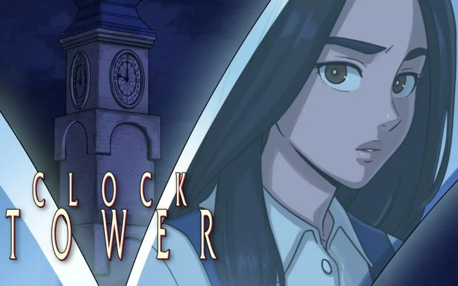

Evolução dos Jogos de Terror
O gênero de terror nos videogames passou por uma transformação impressionante ao longo das últimas décadas. Nos anos 1990, títulos como Clock Tower e Alone in the Dark introduziram as primeiras mecânicas de suspense em gráficos pixelados e cenários pré-renderizados. Foi nessa época que o termo Survival Horror se popularizou, desafiando os jogadores a sobreviverem a cenários aterrorizantes com recursos extremamente limitados. Com o avanço da tecnologia, os desenvolvedores ganharam ferramentas para criar experiências muito mais imersivas. A transição para gráficos em alta definição e, posteriormente, para o fotorrealismo, permitiu que detalhes sutis — como expressões faciais de medo, poças de sangue refletindo a luz e sombras dinâmicas — aumentassem significativamente a sensação de perigo real. Hoje, a evolução não é apenas visual, mas também de inteligência artificial, criando inimigos que aprendem com os hábitos do jogador.

Terror Psicológico vs. Jump Scares
Existe uma diferença fundamental na maneira como os jogos provocam medo em quem está jogando: o uso de jump scares contra o desenvolvimento do terror psicológico. O jump scare é uma técnica baseada em reações biológicas involuntárias, utilizando sons altos e imagens assustadoras que aparecem de surpresa na tela. É uma fórmula muito eficiente para causar um susto imediato, vista em franquias populares como Five Nights at Freddy's. Por outro lado, o terror psicológico atua de forma mais lenta e duradoura. Em jogos como Silent Hill, o medo nasce do desconhecido, da dúvida e da atmosfera perturbadora. Em vez de assustar o jogador com algo repentino, essa abordagem constrói uma tensão constante, fazendo com que a mente da própria pessoa crie cenários assustadores. Ambas as técnicas têm seu valor, mas o terror psicológico costuma deixar uma marca mais profunda na memória de quem joga.
A Gestão de Recursos no Survival Horror
Uma das principais mecânicas para gerar ansiedade em jogos de terror é a escassez de recursos. Diferente de jogos de ação tradicionais, onde o jogador se sente poderoso e munido de arsenais pesados, o Survival Horror coloca o protagonista em posição de extrema vulnerabilidade. Jogos como a franquia Resident Evil utilizam essa limitação como elemento central de game design. Ao limitar a quantidade de munição, itens de cura e até o espaço disponível no inventário, o jogo força o jogador a tomar decisões estratégicas a todo momento. Vale a pena gastar balas para derrotar um inimigo no corredor ou é melhor tentar desviar e economizar? Essa dúvida constante mantém o nível de estresse elevado, transformando a própria gestão de itens em uma ferramenta psicológica para reforçar a sensação de desamparo e urgência.
A Imersão do Terror em Realidade Virtual (VR)
A chegada da Realidade Virtual (VR) levou o gênero de terror a um novo patamar de imersão. Quando se joga em uma tela tradicional, ainda existe uma barreira física entre o jogador e o universo do jogo. Na VR, essa distância desaparece: o jogador é colocado diretamente dentro do ambiente sombrio, com uma visão em 360 graus e áudio tridimensional que simula a presença de ameaças ao seu redor. Essa proximidade altera drasticamente a percepção de escala e perigo. Títulos como Resident Evil 7 em VR ou Phasmophobia mostram como olhar fisicamente para os lados ou ter que esticar as mãos virtuais para abrir uma porta aumenta a frequência cardíaca. A Realidade Virtual elimina a sensação de segurança de estar no sofá de casa, tornando a experiência de medo visceral e extremamente realista.
A Psicologia do Medo: Por Que Gostamos de Sentir Terror?
Pode parecer contraditório que as pessoas procurem voluntariamente por experiências que causam estresse, ansiedade e sustos. No entanto, a psicologia explica esse fenômeno através do conceito de "medo seguro". Quando jogamos um jogo de terror, o nosso cérebro reage ao perigo liberando hormônios como adrenalina e dopamina, preparando o corpo para uma resposta de "luta ou fuga". A grande diferença é que o cérebro sabe que o jogador está em um ambiente controlado e sem risco real de vida. Essa combinação entre a excitação física do perigo e a certeza da segurança produz uma sensação de alívio e bem-estar assim que a ameaça é superada. É essa descarga de adrenalina sem consequências reais que faz com que tantos jogadores sejam apaixonados por histórias e jogos assustadores.